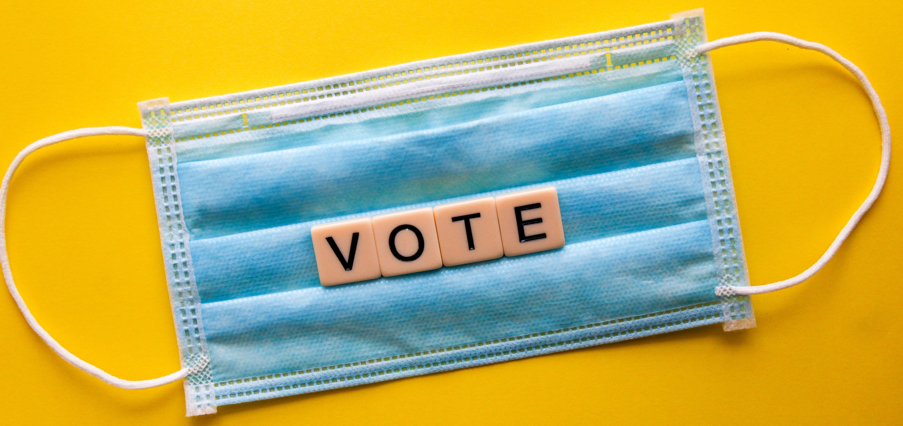

Nominations open for Chair and Secretary
The next Stakeholder meeting will take place via Teams on Friday 3rd December, 1.30 - 4.00 pm. Please let me know if you plan to attend the meeting or if you are unable to do so.
As previously discussed, the MetBioNet Secretary and Chair come to the end of their terms of office in March 2022. We would like to appoint the new post holders at the next Stakeholder meeting so that they are ready to take up their posts in March.
Attached are the job descriptions for both posts and a nomination form. If you are willing to serve in one of these posts, please ask a colleague from a Stakeholder laboratory (it can be your own lab) to nominate you. If you would like more information either post, please contact myself to discuss.
Please also consider if there is anyone you think would be suitable for the posts and discuss with them whether they would like to be nominated. Please send nominations to me by 5pm on Friday 26th November. If there is more than one nomination for a post, we will have an election. Each department will have one vote and I hope to be able to organise this in time for the meeting the following Friday.